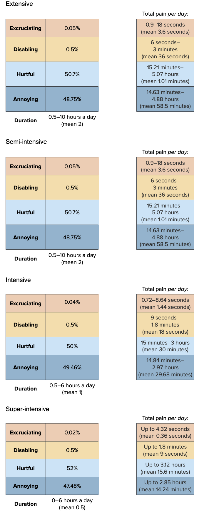

prev_lowdo_stat <- data.frame(FarmType = c(
"Extensive", "Semi-Intensive","Intensive","Super-Intensive"),
mean = c(0.99, 0.8, 0.6, 0.1),
sd = c(0, 0.1978672, 0.2708465, 0.2947446))
prev_lowdo_dist<-mapply(sample_beta, prev_lowdo_stat$mean, prev_lowdo_stat$sd)
colnames(prev_lowdo_dist)<-prev_lowdo_stat$FarmType
prev_lowdo_dist[,1] <- 1 # setting extensive farm prevalence to 100%
prev_lowdo<-as.data.frame(prev_lowdo_dist)Water quality
In this chapter we evaluate the effects of seven water quality parameters on shrimp. We evaluate each variable in isolation, but in reality, many have direct effects on other variables. We also assume that water quality is uniform throughout the tank, though this is likely not the case. The probable impact on our results is that we underestimate the prevalence of water quality issues for intensive or super-intensive systems, because their high stocking densities might mean that some shrimp are forced to occupy less desirable parts of the tank.
Low Dissolved Oxygen
We follow Pedrazzani et al. (2023) and regard dissolved oxygen (DO) levels of at least 4 mg per liter as optimal and 2-3.9 mg/L as sub-optimal. DO below the sub-optimal is likely lethal.
Prevalence
Venkateswarlu et al. (2019) found that mean DO in all study areas of semi-intensive farms was above the optimal. Hukom et al. (2020) found that “traditional plus” (c.f. semi-intensive) farms had mean DO levels below the optimal and that “traditional” (c.f. extensive) farms had mean DO levels above the optimal. The minimum values obtained at each farm were well below the optimal (1.9, 1.2, 1.6, 2.4 ppm). Our water quality literature analysis suggests we can expect around 58% have optimal and 36% suboptimal, though not lethal, DO levels.
Sivaraman et al. (2019) report that 297/300 (92%) of farmers complied with the ask “maintain adequate oxygen levels 5–7 ppm”. Based on the authors descriptions, these are like extensive or semi-intensive farms.
Shrimp Welfare Project’s India Scoping Report found that all semi-intensive farms and the intensive farm had DO at or above the optimal. However, no measurements were made during the night or before sunrise, when we might expect DO to be lowest
In general, we assume that DO is more likely to be suboptimal and last at that level for longer on less intensive farms. This is because extensive farms do not use aeration, whereas semi-intensive often do and intensive and and super-intensive always do—more intensive farms must aerate the water to compensate for high stocking densities, which otherwise reduce DO. Extensive and semi-intensive farms are also less likely to have close control over phytoplankton blooms, which can cause severe DO fluctuations when the blooms crash.
As most DO in the pond comes from plants and phytoplankton photosynthesizing, DO levels are also influenced by outdoor weather conditions, such as cloud cover (Boyd 1989, p.26), so outdoor ponds (extensive, semi-intensive, and some intensive farms) are more likely to experience DO fluctuations. Consequently, at night, when no photosynthesis takes place, shrimp “are often exposed to hypoxic conditions” (Hargreaves & Boyd, 2022, p. 218).
Our prevalence estimates (90% subjective confidence intervals and estimated means) are therefore as follows:
| Extensive | Semi-intensive | Intensive | Super-intensive |
| 100% | 50–100% (mean 80%) | 20–100% (mean 60%) | 0–50% (mean 10%) |
We sample from the beta distributions using these ranges as our 5th and 95th percentiles. We obtain an appropriate standard deviation using the function written in the set up chapter, then draw from the beta distribution using our means and obtained standard deviation.
find_good_sd_binary(mean_val=0.8, tol=1e-6,
fifth_percentile=0.5, ninety_fifth_percentile=1)
find_good_sd_binary(mean_val=0.6, tol=1e-6,
fifth_percentile=0.2, ninety_fifth_percentile=1)
find_good_sd_binary(mean_val=0.1, tol=1e-6,
fifth_percentile=0, ninety_fifth_percentile=0.5)[1] 0.1978672[1] 0.2708465[1] 0.2947446Sampling from beta distribution:
Pain-Tracks
Krummenauer et al. (2011) and Supriatna et al. (2017) suggest that DO concentrations get worse as the production cycle progresses, especially after 90 days. We therefore construct separate Pain-Tracks for the first and second half of the production cycle for each farm type.
Our pain tracks for low DO on the four farm types are as follows:
To construct these Pain-Tracks, we need to split our estimates of average days lived into the first and second halves of production:
max(average_days_lived)[1] 224.0417first_half_prod<-average_days_lived[
average_days_lived<(max(average_days_lived)/2)]
second_half_prod<-average_days_lived[
average_days_lived>=(max(average_days_lived)/2)]
# check that we still have 100,000 samples
length(first_half_prod) + length(second_half_prod)[1] 100000First, we construct the Pain-Tracks for the first half of production.
first_dur_lowdo_ext<-runif(n, 1, 5)
first_dur_lowdo_semi<-runif(n, 0.5, 4)
first_dur_lowdo_int<-runif(n, 0, 1)
first_dur_lowdo_super<-runif(n, 0, 0.5)
first_pain_lowdo_ext<-data.frame(sample_dirichlet(0.01, 0.09, 9.9, 90)) %>%
`colnames<-`(paincategories)
first_pain_lowdo_semi<-data.frame(sample_dirichlet(0.01, 0.09, 9.9, 90)) %>%
`colnames<-`(paincategories)
first_pain_lowdo_int<-data.frame(Excruciating = 0,
Disabling = 0) %>%
cbind(sample_dirichlet(0, 0, 10, 90)) %>%
`colnames<-`(paincategories)
first_pain_lowdo_super<-data.frame(Excruciating = 0,
Disabling = 0) %>%
cbind(sample_dirichlet(0, 0, 5, 95)) %>%
`colnames<-`(paincategories)Then for the second half:
sec_dur_lowdo_ext<-runif(n, 1, 6)
sec_dur_lowdo_semi<-runif(n, 0.5, 5)
sec_dur_lowdo_int<-runif(n, 0, 2)
sec_dur_lowdo_super<-runif(n, 0, 1)
sec_pain_lowdo_ext<-data.frame(sample_dirichlet(0.015, 0.17, 19, 80.815)) %>%
`colnames<-`(paincategories)
sec_pain_lowdo_semi<-data.frame(sample_dirichlet(0.015, 0.17, 19, 80.815)) %>%
`colnames<-`(paincategories)
sec_pain_lowdo_int<-data.frame(sample_dirichlet(0.01, 0.16, 9.93, 89.9)) %>%
`colnames<-`(paincategories)
sec_pain_lowdo_super<-data.frame(Excruciating = 0,
Disabling = 0) %>%
cbind(sample_dirichlet(0, 0, 10, 90)) %>%
`colnames<-`(paincategories)Now we combine the Pain-Tracks, multiplying the first by the average days lived in the first half of production (up to ~110 days) and the second by the average days lived in the second half of production.
paintrack_lowdo_ext<-(first_dur_lowdo_ext * first_pain_lowdo_ext * first_half_prod) + (
sec_dur_lowdo_ext * sec_pain_lowdo_ext * second_half_prod)
paintrack_lowdo_semi<-(first_dur_lowdo_semi * first_pain_lowdo_semi * first_half_prod) + (
sec_dur_lowdo_semi * sec_pain_lowdo_semi * second_half_prod)
paintrack_lowdo_int<-(first_dur_lowdo_int * first_pain_lowdo_int * first_half_prod) + (
sec_dur_lowdo_int * sec_pain_lowdo_int * second_half_prod)
paintrack_lowdo_super<-(first_dur_lowdo_super * first_pain_lowdo_super * first_half_prod) + (
sec_dur_lowdo_super * sec_pain_lowdo_super * second_half_prod)We can now weight these estimates by the prevalence of low DO on each farm type, and the proportion of shrimp that come from that farm type.
low_do_farms<-data.frame(ext = paintrack_lowdo_ext*prev_lowdo$Extensive*prop_sample$Ext,
semi = paintrack_lowdo_semi*prev_lowdo$`Semi-Intensive`*prop_sample$Semi,
int = paintrack_lowdo_int*prev_lowdo$Intensive*prop_sample$Int,
super = paintrack_lowdo_super*prev_lowdo$`Super-Intensive`*prop_sample$Super)Finally, we combine the pain categories across farm types and calculate the disabling-equivalent pain hours.
low_do<-low_do_farms %>%
mutate(allfarms.Annoying = ext.Annoying + semi.Annoying + int.Annoying + super.Annoying,
allfarms.Hurtful = ext.Hurtful + semi.Hurtful + int.Hurtful + super.Hurtful,
allfarms.Disabling = ext.Disabling + semi.Disabling + int.Disabling + super.Disabling,
allfarms.Excruciating = ext.Excruciating + semi.Excruciating + int.Excruciating + super.Excruciating,)
average_hours_lowdo <- low_do %>%
select(starts_with("allfarms"))
average_hours_lowdo$Disabling_Equivalent<- (
average_hours_lowdo$allfarms.Annoying*Annoying_Weight) + (
average_hours_lowdo$allfarms.Hurtful*Hurtful_Weight) +(
average_hours_lowdo$allfarms.Disabling*Disabling_Weight)+(
average_hours_lowdo$allfarms.Excruciating*Excruciating_Weight)
lowdo_summary<-cbind(round(rbind(
(quantile(x =average_hours_lowdo$allfarms.Annoying, probs = c(.05, .50, .95))),
(quantile(x =average_hours_lowdo$allfarms.Hurtful, probs = c(.05, .50, .95))),
(quantile(x =average_hours_lowdo$allfarms.Disabling, probs = c(.05, .50, .95))),
(quantile(x =average_hours_lowdo$allfarms.Excruciating, probs = c(.05, .50, .95))),
(quantile(x =average_hours_lowdo$Disabling_Equivalent, probs = c(.05, .50, .95)))), 10),
"Mean" = colMeans(average_hours_lowdo))
row.names(lowdo_summary)<-c(
"Annoying_lowDO","Hurtful_lowDO","Disabling_lowDO", "Excruciating_lowDO", "Disabling-Equivalent_Low_dissolved_oxygen")
show_table(lowdo_summary)| 5% | 50% | 95% | Mean | |
|---|---|---|---|---|
| Annoying_lowDO | 83.9184686 | 178.5949558 | 313.0961618 | 185.9962085 |
| Hurtful_lowDO | 14.7301565 | 30.4081422 | 53.4128461 | 31.7587200 |
| Disabling_lowDO | 0.0029572 | 0.1324434 | 1.2539827 | 0.3169395 |
| Excruciating_lowDO | 0.0000000 | 0.0000014 | 0.1195333 | 0.0269342 |
| Disabling-Equivalent_Low_dissolved_oxygen | 1.7896609 | 5.2946956 | 56.9708905 | 18.3762769 |
High temperature
We consider high temperature as 32.5 Celsius and above because 25.5°C to 32.4°C is the recommended optimal range for P. vannamei (Pedrazzani et al., 2023). The suboptimal range is 32.5°C to 35.4°C, so anything above this is likely lethal.
Prevalence
Lin and Drazba (2006, p. 79) report that “The maximum daily temperature varied from 31 to 35 degrees in the warm season for the majority of ponds in both hemispheres”.
Venkateswarlu et al. (2019) found no instances of high temperature on semi-intensive farms in their study.
Hukom et al. (2020) found that mean temperatures on extensive and semi-intensive farms were broadly similar. The upper bounds of the standard deviations for extensive farms were very slightly over the optimal limit of 32.4°C. The maximum temperatures recorded across farm types were higher than the optimal limit for all (35.5°C, 33°C, 33°C, 33°C)
Shrimp Welfare Project’s India Scoping Report found that all analysed farms (semi-intensive and one intensive farm) were within the optimal temperature range.
Temperature in ponds can fluctuate daily and with the seasons (Lin & Drazba, 2006, p. 79). Rainfall can also cause water temperature to drop in outdoor ponds (Buike, 2018). Extensive and semi-intensive farms are more likely to be open (not indoor) ponds, so are more susceptible to these weather and seasonal fluctuations. Some intensive farms may also be outside (Clayton et al., 2022, p. 287).
Taken together, this suggests issues of high temperature are not likely for any farm type, but we are more uncertain about outdoor farm types.
| Extensive | Semi-intensive | Intensive | Super-intensive |
| 10–30% (mean 20%) | 10–30% (mean 15%) | 0–10% (mean 5%) | 0–5% (mean 2.5%) |
We draw from the beta distribution for our 90% credibility intervals for prevalence:
find_good_sd_binary(mean_val=0.2, tol=1e-6,
fifth_percentile=0.1, ninety_fifth_percentile=0.3)
find_good_sd_binary(mean_val=0.15, tol=1e-6,
fifth_percentile=0.1, ninety_fifth_percentile=0.3)
find_good_sd_binary(mean_val=0.05, tol=1e-6,
fifth_percentile=0, ninety_fifth_percentile=0.1)
find_good_sd_binary(mean_val=0.025, tol=1e-6, sd_val=0.15,
fifth_percentile=0, ninety_fifth_percentile=0.05)[1] 0.06179771[1] 0.040631[1] 0.03660087[1] 0.01867974Sampling from beta distribution:
prev_hitemp_stat <- data.frame(FarmType = c(
"Extensive", "Semi-Intensive","Intensive","Super-Intensive"),
mean = c(0.2, 0.15, 0.05, 0.025),
sd = c(0.06179771, 0.040631, 0.03660087, 0.01867974))
prev_hitemp_dist<-mapply(sample_beta, prev_hitemp_stat$mean, prev_hitemp_stat$sd)
colnames(prev_hitemp_dist)<-prev_hitemp_stat$FarmType
prev_hitemp<-as.data.frame(prev_hitemp_dist)Pain-Tracks
We now construct the Pain-Tracks for high temperature, which are as follows:
Drawing from uniform distributions and Dirichlet distributions for duration and intensity, respectively:
dur_hitemp_ext<-runif(n, 1, 5)
dur_hitemp_semi<-runif(n, 0.5, 4)
dur_hitemp_int<-runif(n, 0, 1)
dur_hitemp_super<-runif(n, 0, 0.5)
pain_hitemp_ext<-data.frame(sample_dirichlet(0.01, 0.02, 9, 90.97)) %>%
`colnames<-`(paincategories)
pain_hitemp_semi<-data.frame(sample_dirichlet(0.1, 0.1, 9, 90.8)) %>%
`colnames<-`(paincategories)
pain_hitemp_int<-data.frame(Excruciating = 0) %>%
cbind(sample_dirichlet(0, 0.2, 15, 84.8)) %>%
`colnames<-`(paincategories)
pain_hitemp_super<-data.frame(Excruciating = 0,
Disabling = 0) %>%
cbind(sample_dirichlet(0, 0, 1, 99)) %>%
`colnames<-`(paincategories)Combine the intensity and duration information
paintrack_hitemp_ext<-(dur_hitemp_ext * pain_hitemp_ext)
paintrack_hitemp_semi<-(dur_hitemp_semi * pain_hitemp_semi)
paintrack_hitemp_int<-(dur_hitemp_int * pain_hitemp_int)
paintrack_hitemp_super<-(dur_hitemp_super * pain_hitemp_super)Now we can combine Pain-Tracks and prevalence estimations, multiplying by the average days lived by a shrimp, and then weight by the proportion of production attributable to each farm type
hitemp_farms<-data.frame(
ext =
paintrack_hitemp_ext*prev_hitemp$Extensive*prop_sample$Ext*average_days_lived,
semi =
paintrack_hitemp_semi*prev_hitemp$`Semi-Intensive`*prop_sample$Semi*average_days_lived,
int =
paintrack_hitemp_int*prev_hitemp$Intensive*prop_sample$Int*average_days_lived,
super =
paintrack_hitemp_super*prev_hitemp$`Super-Intensive`*prop_sample$Super*average_days_lived)Finally, we add the pain categories across farm types and calculate the disabling-equivalent pain hours.
hitemp<-hitemp_farms %>%
mutate(allfarms.Annoying = ext.Annoying + semi.Annoying + int.Annoying + super.Annoying,
allfarms.Hurtful = ext.Hurtful + semi.Hurtful + int.Hurtful + super.Hurtful,
allfarms.Disabling = ext.Disabling + semi.Disabling + int.Disabling + super.Disabling,
allfarms.Excruciating = ext.Excruciating + semi.Excruciating + int.Excruciating + super.Excruciating,)
average_hours_hitemp <- hitemp %>%
select(starts_with("allfarms"))
average_hours_hitemp$Disabling_Equivalent<- (
average_hours_hitemp$allfarms.Annoying*Annoying_Weight) + (
average_hours_hitemp$allfarms.Hurtful*Hurtful_Weight) +(
average_hours_hitemp$allfarms.Disabling*Disabling_Weight)+(
average_hours_hitemp$allfarms.Excruciating*Excruciating_Weight)
hitemp_summary<-cbind(round(rbind(
(quantile(x =average_hours_hitemp$allfarms.Annoying, probs = c(.05, .50, .95))),
(quantile(x =average_hours_hitemp$allfarms.Hurtful, probs = c(.05, .50, .95))),
(quantile(x =average_hours_hitemp$allfarms.Disabling, probs = c(.05, .50, .95))),
(quantile(x =average_hours_hitemp$allfarms.Excruciating, probs = c(.05, .50, .95))),
(quantile(x =average_hours_hitemp$Disabling_Equivalent, probs = c(.05, .50, .95)))), 10),
"Mean" = colMeans(average_hours_hitemp))
row.names(hitemp_summary)<-c(
"Annoying_hitemp","Hurtful_hitemp","Disabling_hitemp", "Excruciating_hitemp", "Disabling-Equivalent_High_temperature")
show_table(hitemp_summary)| 5% | 50% | 95% | Mean | |
|---|---|---|---|---|
| Annoying_hitemp | 1.4815094 | 14.0656198 | 30.4705546 | 14.5577175 |
| Hurtful_hitemp | 0.1535746 | 1.4655054 | 3.4800825 | 1.5764484 |
| Disabling_hitemp | 0.0000007 | 0.0014175 | 0.0591489 | 0.0120646 |
| Excruciating_hitemp | 0.0000000 | 0.0000459 | 0.0373763 | 0.0071722 |
| Disabling-Equivalent_High_temperature | 0.0342852 | 0.3861913 | 17.8070982 | 3.8696995 |
Low temperature
We consider low temperature as 25.4°C and below—the suboptimal range for P. vannamei is 14.5–25.4°C, and less than 14.5°C is lethal (Pedrazzani et al., 2023).
Prevalence
Shrimp farmers often do not stock ponds in winter.
Shrimp Welfare Project’s India Scoping Report found no instances of low temperature in any semi-intensive farms they studied, nor the one intensive farm.
All extensive and semi-intensive farms surveyed by Hukom et al. (2020) had average temperature above 25.4°C. However, the minimum temperatures recorded within each farm type were below optimal for three farms (20°C, 23.9°C, 22°C).
Venkateswarlu et al. (2019) found that the mean temperature was slightly below the optimal of 25.5°C in two study areas of semi-intensive farms.
We therefore estimate low temperature prevalence as:
| Extensive | Semi-intensive | Intensive | Super-intensive |
| 0-20% (mean 10%) | 0-20% (mean 10%) | 0-5% (mean 2.5%) | 0–1% (mean 0.5%) |
find_good_sd_binary(mean_val=0.1, tol=1e-6,
fifth_percentile=0, ninety_fifth_percentile=0.2)
find_good_sd_binary(mean_val=0.1, tol=1e-6,
fifth_percentile=0, ninety_fifth_percentile=0.2)
find_good_sd_binary(mean_val=0.025, tol=1e-6, sd_val=0.15,
fifth_percentile=0, ninety_fifth_percentile=0.05)
find_good_sd_binary(mean_val=0.005, tol=1e-6, sd_val=0.05,
fifth_percentile=0, ninety_fifth_percentile=0.01)[1] 0.07280474[1] 0.07254953[1] 0.01859695[1] 0.07053341Sampling from beta distribution:
prev_lowtemp_stat <- data.frame(FarmType = c(
"Extensive", "Semi-Intensive","Intensive","Super-Intensive"),
mean = c(0.1, 0.1, 0.025, 0.005),
sd = c(0.07280474, 0.07254953, 0.01859695, 0.07053341))
prev_lowtemp_dist<-mapply(sample_beta, prev_lowtemp_stat$mean, prev_lowtemp_stat$sd)
colnames(prev_lowtemp_dist)<-prev_lowtemp_stat$FarmType
prev_lowtemp<-as.data.frame(prev_lowtemp_dist)Pain-Tracks
Our hypothesized Pain-Tracks for low temperature are:
We draw from uniform distributions and Dirichlet distributions to construct the Pain-Tracks.
dur_lowtemp_ext<-runif(n, 0, 2)
dur_lowtemp_semi<-runif(n, 0, 2)
dur_lowtemp_int<-runif(n, 0, 1)
dur_lowtemp_super<-runif(n, 0, 0.1)
pain_lowtemp_ext<-data.frame(
Excruciating = 0,
Disabling = 0) %>%
cbind(sample_dirichlet(0, 0, 5, 95)) %>%
`colnames<-`(paincategories)
pain_lowtemp_semi<-data.frame(
Excruciating = 0,
Disabling = 0) %>%
cbind(sample_dirichlet(0, 0, 5, 95)) %>%
`colnames<-`(paincategories)
pain_lowtemp_int<-data.frame(
Excruciating = 0,
Disabling = 0) %>%
cbind(sample_dirichlet(0, 0, 1, 99)) %>%
`colnames<-`(paincategories)
pain_lowtemp_super<-data.frame(
Excruciating = 0,
Disabling = 0) %>%
cbind(sample_dirichlet(0, 0, 0.3, 99.7)) %>%
`colnames<-`(paincategories)Combine the intensity and duration information
paintrack_lowtemp_ext<-(dur_lowtemp_ext * pain_lowtemp_ext)
paintrack_lowtemp_semi<-(dur_lowtemp_semi * pain_lowtemp_semi)
paintrack_lowtemp_int<-(dur_lowtemp_int * pain_lowtemp_int)
paintrack_lowtemp_super<-(dur_lowtemp_super * pain_lowtemp_super)Now we multiply the Pain-Tracks with prevalence estimations and by the average days lived by a shrimp, and then weight by the proportion of production attributable to each farm type.
lowtemp_farms<-data.frame(
ext = paintrack_lowtemp_ext*prev_lowtemp$Extensive*prop_sample$Ext*average_days_lived,
semi = paintrack_lowtemp_semi*prev_lowtemp$`Semi-Intensive`*prop_sample$Semi*average_days_lived,
int = paintrack_lowtemp_int*prev_lowtemp$Intensive*prop_sample$Int*average_days_lived,
super = paintrack_lowtemp_super*prev_lowtemp$`Super-Intensive`*prop_sample$Super*average_days_lived)Then add the pain categories across farm types and calculate the disabling-equivalent pain hours.
lowtemp<-lowtemp_farms %>%
mutate(allfarms.Annoying = ext.Annoying + semi.Annoying + int.Annoying + super.Annoying,
allfarms.Hurtful = ext.Hurtful + semi.Hurtful + int.Hurtful + super.Hurtful,
allfarms.Disabling = ext.Disabling + semi.Disabling + int.Disabling + super.Disabling,
allfarms.Excruciating = ext.Excruciating + semi.Excruciating + int.Excruciating + super.Excruciating,)
average_hours_lowtemp <- lowtemp %>%
select(starts_with("allfarms"))
average_hours_lowtemp$Disabling_Equivalent<- (
average_hours_lowtemp$allfarms.Annoying*Annoying_Weight) + (
average_hours_lowtemp$allfarms.Hurtful*Hurtful_Weight) +(
average_hours_lowtemp$allfarms.Disabling*Disabling_Weight)+(
average_hours_lowtemp$allfarms.Excruciating*Excruciating_Weight)
lowtemp_summary<-cbind(round(rbind(
(quantile(x =average_hours_lowtemp$allfarms.Annoying, probs = c(.05, .50, .95))),
(quantile(x =average_hours_lowtemp$allfarms.Hurtful, probs = c(.05, .50, .95))),
(quantile(x =average_hours_lowtemp$allfarms.Disabling, probs = c(.05, .50, .95))),
(quantile(x =average_hours_lowtemp$allfarms.Excruciating, probs = c(.05, .50, .95))),
(quantile(x =average_hours_lowtemp$Disabling_Equivalent, probs = c(.05, .50, .95)))), 10),
"Mean" = colMeans(average_hours_lowtemp))
row.names(lowtemp_summary)<-c(
"Annoying_lowtemp","Hurtful_lowtemp","Disabling_lowtemp", "Excruciating_lowtemp", "Disabling-Equivalent_Low_temperature")
show_table(lowtemp_summary)| 5% | 50% | 95% | Mean | |
|---|---|---|---|---|
| Annoying_lowtemp | 0.3224764 | 3.2871236 | 10.5030561 | 4.0362914 |
| Hurtful_lowtemp | 0.0101805 | 0.1165840 | 0.5072650 | 0.1688784 |
| Disabling_lowtemp | 0.0000000 | 0.0000000 | 0.0000000 | 0.0000000 |
| Excruciating_lowtemp | 0.0000000 | 0.0000000 | 0.0000000 | 0.0000000 |
| Disabling-Equivalent_Low_temperature | 0.0029003 | 0.0312694 | 0.1232026 | 0.0427732 |
Low salinity
For P. vannamei, 10-40.9 psu is the optimal range; 0.6-9.9 and 41.0-59.0 psu are the suboptimal ranges (Table 11 of Pedrazzani et al., 2023).
Prevalence
Lin and Drazba (2006, p. 80) report that ~70% of farms in the East and ~47% in West had salinity of 10 psu or below.1
Venkateswarlu et al. (2019) found that average salinities were within the optimal range. Our water quality literature analysis suggests that we would expect the majority of the semi-intensive farms to be within optimal ranges, with potentially up to ~10% in the suboptimal range.
Hukom et al. (2020) also reported that average salinities at extensive and semi-intensive farms were all within optimal range, but standard deviation ranges overlap the optimal limit in both farm types. Minimum values on three of four farm types were below optimal (1 ppt, 1 ppt, 4 ppt). Our water quality literature analysis suggests we would expect ~88% of farms with these averages and standard deviations to be within the optimal range but with large uncertainty (95% confidence intervals 48%–98%)
Sivaraman et al. (2019) report 277/300 farmers complied with ask “salinity between 15 and 25 ppt”. So, at minimum 92.3% were in optimal ranges, though, due to differences in definition of optimal salinity, this figure could be higher. Alternatively, as the study relied on self-reporting, this percentage could also be too optimistic.
Shrimp Welfare Project’s India Scoping Report found that 70% of farms studies (19 semi-intensive and one intensive) were below optimal salinity.
Rain can reduce salinity, so we expect low salinity to be more prevalent on outdoor farms. This increases our prevalence likelihood for extensive and semi-intensive farms. P. vannamei, can tolerate a very wide range of salinities (McGraw et al., 2002; Chen et al., 2016), so farmers may be less concerned about fluctuations in salinity than other water quality variables.
Intensive and super-intensive facilities may be more likely to purposely use low-salinity water, as high-salinity water represents a significant production cost (Boopathy et al., 2007; Roy et al., 2010). Shrimp in these systems are likely acclimatized to low salinity prior to being put in ponds, which would negate some of the negative impacts (Roy et al., 2010; Suantika et al., 2018). This increases our prevalence likelihood for intensive and super-intensive farms, but especially super-intensive farms, which are the mostly likely to be based inland away from natural water sources. That said, we are unsure how low in salinity these farms will source their water.
Our prevalence estimates are:
| Extensive | Semi-intensive | Intensive | Super-intensive |
|---|---|---|---|
| 25–75% (mean 50%) | 10–70% (mean 50%) | 25–75% (mean 50%) | 50–90% (mean 75%) |
We sample from the beta distributions using these ranges as our 5th and 95th percentiles.
find_good_sd_binary(mean_val=0.5, tol=1e-6,
fifth_percentile=0.25, ninety_fifth_percentile=0.75)
find_good_sd_binary(mean_val=0.5, tol=1e-6,
fifth_percentile=0.1, ninety_fifth_percentile=0.7)
find_good_sd_binary(mean_val=0.75, tol=1e-6,
fifth_percentile=0.5, ninety_fifth_percentile=0.9)[1] 0.1516433[1] 0.1512303[1] 0.1137723Sampling from beta distribution:
prev_salin_stat <- data.frame(FarmType = c(
"Extensive", "Semi-Intensive","Intensive","Super-Intensive"),
mean = c(0.5, 0.5, 0.5, 0.75),
sd = c(0.1516433, 0.1512303, 0.1516433, 0.1137723))
prev_salin_dist<-mapply(sample_beta, prev_salin_stat$mean, prev_salin_stat$sd)
colnames(prev_salin_dist)<-prev_salin_stat$FarmType
prev_salin<-as.data.frame(prev_salin_dist)Pain-Tracks
Our Pain-Tracks for low salinity are:
For super-intensive farms, we think those that use normal salinity water likely control the water quality tightly, so low salinity is very rare. However, on super-intensive farms that purposely use low salinity water, then low salinity is likely to be present for almost 24 hours a day. We therefore use a bimodal distribution by taking half of our samples from a truncated normal distribution between 0 and 1 hours and the other half from a truncated normal distribution between 23.5 and 24 hours.
We use the same approach for intensive farms, but widen the ranges as intensive farms can have slightly less controlled water quality than super-intensive farms.
dur_salin_ext<-runif(n, 5, 24)
dur_salin_semi<-runif(n, 1, 24)
dur_salin_int_low<-rtruncnorm(n/2, 0.5, 5)
dur_salin_int_high<-rtruncnorm(n/2, 20, 24)
dur_salin_int<-rbind(dur_salin_int_low, dur_salin_int_high)
dur_salin_super_low<-rtruncnorm(n/2, 0, 1)
dur_salin_super_high<-rtruncnorm(n/2, 23.5, 24)
dur_salin_super<-rbind(dur_salin_super_low, dur_salin_super_high)
pain_salin_ext<-data.frame(sample_dirichlet(0.0025, 0.005, 0.5, 99.4925)) %>%
`colnames<-`(paincategories)
pain_salin_semi<-data.frame(sample_dirichlet(0.0025, 0.005, 0.5, 99.4925)) %>%
`colnames<-`(paincategories)
pain_salin_int<-data.frame(
Excruciating = 0,
Disabling = 0) %>%
cbind(sample_dirichlet(0, 0, 0.5, 99.5)) %>%
`colnames<-`(paincategories)
pain_salin_super<-data.frame(
Excruciating = 0,
Disabling = 0) %>%
cbind(sample_dirichlet(0, 0, 0.05, 99.95)) %>%
`colnames<-`(paincategories)Combine the intensity and duration information
paintrack_salin_ext<-(dur_salin_ext * pain_salin_ext)
paintrack_salin_semi<-(dur_salin_semi * pain_salin_semi)
paintrack_salin_int<-(dur_salin_int * pain_salin_int)
paintrack_salin_super<-(dur_salin_super * pain_salin_super)We combine Pain-Tracks and prevalence estimations, multiplying by the average days lived by a shrimp, and then weight by the proportion of production attributable to each farm type
salin_farms<-data.frame(
ext = paintrack_salin_ext*prev_salin$Extensive*prop_sample$Ext*average_days_lived,
semi = paintrack_salin_semi*prev_salin$`Semi-Intensive`*prop_sample$Semi*average_days_lived,
int = paintrack_salin_int*prev_salin$Intensive*prop_sample$Int*average_days_lived,
super = paintrack_salin_super*prev_salin$`Super-Intensive`*prop_sample$Super*average_days_lived)Add the pain categories across farm types and calculate the disabling-equivalent pain hours.
salin<-salin_farms %>%
mutate(allfarms.Annoying = ext.Annoying + semi.Annoying + int.Annoying + super.Annoying,
allfarms.Hurtful = ext.Hurtful + semi.Hurtful + int.Hurtful + super.Hurtful,
allfarms.Disabling = ext.Disabling + semi.Disabling + int.Disabling + super.Disabling,
allfarms.Excruciating = ext.Excruciating + semi.Excruciating + int.Excruciating + super.Excruciating,)
average_hours_salin <- salin %>%
select(starts_with("allfarms"))
average_hours_salin$Disabling_Equivalent<- (
average_hours_salin$allfarms.Annoying*Annoying_Weight) + (
average_hours_salin$allfarms.Hurtful*Hurtful_Weight) +(
average_hours_salin$allfarms.Disabling*Disabling_Weight)+(
average_hours_salin$allfarms.Excruciating*Excruciating_Weight)
salin_summary<-cbind(round(rbind(
(quantile(x =average_hours_salin$allfarms.Annoying, probs = c(.05, .50, .95))),
(quantile(x =average_hours_salin$allfarms.Hurtful, probs = c(.05, .50, .95))),
(quantile(x =average_hours_salin$allfarms.Disabling, probs = c(.05, .50, .95))),
(quantile(x =average_hours_salin$allfarms.Excruciating, probs = c(.05, .50, .95))),
(quantile(x =average_hours_salin$Disabling_Equivalent, probs = c(.05, .50, .95)))), 10),
"Mean" = colMeans(average_hours_salin))
row.names(salin_summary)<-c(
"Annoying_salin","Hurtful_salin","Disabling_salin", "Excruciating_salin", "Disabling-Equivalent_Low_salinity")
show_table(salin_summary)| 5% | 50% | 95% | Mean | |
|---|---|---|---|---|
| Annoying_salin | 38.4782629 | 403.444084 | 1753.0713107 | 653.4683351 |
| Hurtful_salin | 0.0733504 | 1.295715 | 13.4552291 | 3.2556332 |
| Disabling_salin | 0.0000000 | 0.000000 | 0.0023017 | 0.0103565 |
| Excruciating_salin | 0.0000000 | 0.000000 | 0.0000120 | 0.0049469 |
| Disabling-Equivalent_Low_salinity | 0.2457338 | 2.701558 | 14.3659243 | 6.8776228 |
Nonoptimal pH
Note that, to avoid double counting, we exclude the welfare effects nonoptimal pH may produce via causing ammonia to be toxic, as this is covered in the ammonia model.
We model low and high pH together, since the effects are similar.
For P. vannamei, 6.5-8.5 is the optimal pH range, and 5.0-6.4 or 8.6-9.0 is the suboptimal range (See Table 11 of Pedrazzani et al., 2023). P. monodon are possibly more sensitive to small deviations (Hsieh et al., 2021; Noor-Hamid et al., 1994)
Prevalence
All mean pH values from semi-intensive farms measured by Venkateswarlu et al. (2019) were within the optimal range, though all had error bars with upper bounds not only outside the optimal range but into the lethal range. Our water quality literature analysis suggests we can expect the breakdown of farms with these summary statistics to be ~60% within optimal range and ~20% within suboptimal, suggesting 20% are in lethal ranges.
Hukom et al. (2020) found that mean pH was optimal for both P. vannamei and. P. monodon extensive farms and for P. vannamei semi-intensive farms—P. monodon semi-intensive farms had an average of 8.64. Our water quality literature analysis suggests there is wide variation between farms in this study, with roughly 70% (95% confidence intervals: 40–90%) optimal. Average minimum measurements obtained were below optimal for all farm types (6.14, 6.4) and average maximum measurements were above on all farm types (9.68, 9, 9.1, 9).
Sivaraman et al. (2019) report that 277 of 300 studied farms say they complied with the ask “Maintain pH between 7.5 and 8.5”, equating to ~92.3%, though this figure could be higher due to differences in definitions of optimal pH. On the other hand, as the study relied on self-reporting, this percentage could also be an overestimation.
Shrimp Welfare Project’s India Scoping Report shows that 15% of farms studied (19 semi-intensive, one intensive) had nonoptimal pH. All nonoptimal measurements were high pH.
According to Kubitza (2017), pH levels are often overlooked, and pH levels of 9 in ponds in the afternoon are “quite common”. A recent survey conducted in India reported that pH is usually not measured by shrimp producers (Boyd et al., 2018), suggesting it could more easily go outside optimal ranges. pH in outdoor ponds can also be impacted by rain, which is usually acidic (Boyd & Tucker, 1998, p. 224).This increases our prevalence estimates for outdoor ponds (mostly extensive and semi-intensive).
Our prevalence estimates are:
| Extensive | Semi-intensive | Intensive | Super-intensive |
|---|---|---|---|
| 10–50% (mean 30%) | 10–40% (mean 20%) | 0–15% (mean 7.5%) | 0–10% (mean 5%) |
find_good_sd_binary(mean_val=0.3, tol=1e-6,
fifth_percentile=0.1, ninety_fifth_percentile=0.5)
find_good_sd_binary(mean_val=0.2, tol=1e-6,
fifth_percentile=0.1, ninety_fifth_percentile=0.4)
find_good_sd_binary(mean_val=0.075, tol=1e-6,
fifth_percentile=0, ninety_fifth_percentile=0.15)
find_good_sd_binary(mean_val=0.05, tol=1e-6,
fifth_percentile=0, ninety_fifth_percentile=0.1)[1] 0.1239601[1] 0.07874184[1] 0.054691[1] 0.03682036Sampling from beta distribution:
prev_ph_stat <- data.frame(FarmType = c(
"Extensive", "Semi-Intensive","Intensive","Super-Intensive"),
mean = c(0.3, 0.2, 0.075, 0.05),
sd = c(0.1239601, 0.07874184, 0.054691, 0.03682036))
prev_ph_dist<-mapply(sample_beta, prev_ph_stat$mean, prev_ph_stat$sd)
colnames(prev_ph_dist)<-prev_ph_stat$FarmType
prev_ph<-as.data.frame(prev_ph_dist)Pain-Tracks
Our hypothesized pain category allocations are as follows:
dur_ph_ext<-runif(n, 1, 4)
dur_ph_semi<-runif(n, 1, 4)
dur_ph_int<-runif(n, 1, 3)
dur_ph_super<-runif(n, 0, 0.5)
pain_ph_ext<-data.frame(sample_dirichlet(0.01, 0.1, 9.09, 90.8)) %>%
`colnames<-`(paincategories)
pain_ph_semi<-data.frame(sample_dirichlet(0.01, 0.1, 9.09, 90.8)) %>%
`colnames<-`(paincategories)
pain_ph_int<-data.frame(
Excruciating = 0,
Disabling = 0) %>%
cbind(sample_dirichlet(0, 0, 5, 95)) %>%
`colnames<-`(paincategories)
pain_ph_super<-data.frame(
Excruciating = 0,
Disabling = 0) %>%
cbind(sample_dirichlet(0, 0, 5, 95)) %>%
`colnames<-`(paincategories)Combine the intensity and duration information
paintrack_ph_ext<-(dur_ph_ext * pain_ph_ext)
paintrack_ph_semi<-(dur_ph_semi * pain_ph_semi)
paintrack_ph_int<-(dur_ph_int * pain_ph_int)
paintrack_ph_super<-(dur_ph_super * pain_ph_super)Weight the pain tracks by prevalence estimations and proportion of farming attributable to each farm type, as well as the average days lived by a shrimp.
ph_farms<-data.frame(
ext = paintrack_ph_ext*prev_ph$Extensive*prop_sample$Ext*average_days_lived,
semi = paintrack_ph_semi*prev_ph$`Semi-Intensive`*prop_sample$Semi*average_days_lived,
int = paintrack_ph_int*prev_ph$Intensive*prop_sample$Int*average_days_lived,
super = paintrack_ph_super*prev_ph$`Super-Intensive`*prop_sample$Super*average_days_lived)Add the pain categories across farm types and calculate the disabling-equivalent pain hours.
ph<-ph_farms %>%
mutate(allfarms.Annoying = ext.Annoying + semi.Annoying + int.Annoying + super.Annoying,
allfarms.Hurtful = ext.Hurtful + semi.Hurtful + int.Hurtful + super.Hurtful,
allfarms.Disabling = ext.Disabling + semi.Disabling + int.Disabling + super.Disabling,
allfarms.Excruciating = ext.Excruciating + semi.Excruciating + int.Excruciating + super.Excruciating,)
average_hours_ph <- ph %>%
select(starts_with("allfarms"))
average_hours_ph$Disabling_Equivalent<- (
average_hours_ph$allfarms.Annoying*Annoying_Weight) + (
average_hours_ph$allfarms.Hurtful*Hurtful_Weight) +(
average_hours_ph$allfarms.Disabling*Disabling_Weight)+(
average_hours_ph$allfarms.Excruciating*Excruciating_Weight)
ph_summary<-cbind(round(rbind(
(quantile(x =average_hours_ph$allfarms.Annoying, probs = c(.05, .50, .95))),
(quantile(x =average_hours_ph$allfarms.Hurtful, probs = c(.05, .50, .95))),
(quantile(x =average_hours_ph$allfarms.Disabling, probs = c(.05, .50, .95))),
(quantile(x =average_hours_ph$allfarms.Excruciating, probs = c(.05, .50, .95))),
(quantile(x =average_hours_ph$Disabling_Equivalent, probs = c(.05, .50, .95)))), 10),
"Mean" = colMeans(average_hours_ph))
row.names(ph_summary)<-c(
"Annoying_ph","Hurtful_ph","Disabling_ph", "Excruciating_ph", "Disabling-Equivalent_Nonoptimal_pH")
show_table(ph_summary)| 5% | 50% | 95% | Mean | |
|---|---|---|---|---|
| Annoying_ph | 2.9105247 | 27.5305727 | 62.3456752 | 29.0677935 |
| Hurtful_ph | 0.2299551 | 2.1714127 | 5.2394812 | 2.3530146 |
| Disabling_ph | 0.0000000 | 0.0012072 | 0.0994635 | 0.0192728 |
| Excruciating_ph | 0.0000000 | 0.0000000 | 0.0031246 | 0.0018570 |
| Disabling-Equivalent_Nonoptimal_pH | 0.0429287 | 0.4249535 | 1.9043246 | 1.3857547 |
High un-ionized ammonia
For P. vannamei, the optimal range 0-0.10 mg/L and the suboptimal range is 0.11-0.30 mg/L (Table 11 of Pedrazzani et al., 2023).
Prevalence
Shrimp Welfare Project’s India Scoping Report found that 40% of farms studied (19 semi-intensive, one intensive) had high ammonia. 6 (30%) were into the lethal range.
None of the prevalence studies reviewed for other the water quality welfare threats measure un-ionized ammonia.
Low stocking densities and no additional feed in extensive ponds lowers their risk of high ammonia, but a lack of aeration increases the risk. Semi-intensive farms use relatively low stocking densities and often use aeration, so their risk of high ammonia may be lower than extensive farms.
Intensive systems contain more shrimp and, therefore, usually more uneaten feed and excrement, raising ammonia levels. Recirculating aquaculture systems, which are usually super-intensive farms, can remove ammonia from the water or convert it to a less toxic form. Natural, extensive pond systems benefit from microbial communities breaking down toxic ammonia (Dauda et al., 2019), so these farm types seem slightly less likely to have ammonia problems.
Our prevalence estimates are:
| Extensive | Semi-intensive | Intensive | Super-intensive |
|---|---|---|---|
| 25–100% (mean 50%) | 25–100% (mean 40%) | 40–100% (mean 60%) | 5–90% (mean 30%) |
find_good_sd_binary(mean_val=0.5, tol=1e-6,
fifth_percentile=0.25, ninety_fifth_percentile=1)
find_good_sd_binary(mean_val=0.4, tol=1e-6,
fifth_percentile=0.25, ninety_fifth_percentile=1)
find_good_sd_binary(mean_val=0.6, tol=1e-6,
fifth_percentile=0.4, ninety_fifth_percentile=1)
find_good_sd_binary(mean_val=0.3, tol=1e-6,
fifth_percentile=0.05, ninety_fifth_percentile=0.9)[1] 0.1871343[1] 0.116733[1] 0.1477067[1] 0.2117818Sampling from beta distribution:
prev_ammon_stat <- data.frame(FarmType = c(
"Extensive", "Semi-Intensive","Intensive","Super-Intensive"),
mean = c(0.5, 0.4, 0.6, 0.3),
sd = c(0.1871343, 0.116733, 0.1477067, 0.2117818))
prev_ammon_dist<-mapply(sample_beta, prev_ammon_stat$mean, prev_ammon_stat$sd)
colnames(prev_ammon_dist)<-prev_ammon_stat$FarmType
prev_ammon<-as.data.frame(prev_ammon_dist)Pain-Tracks

Un-ionized ammonia proportions increase with increasing pH and temperature, so ammonia often increases in the afternoon. So, we model ammonia similarly to high pH and temperature (though temperature has less of an effect than pH so we mostly consider pH and then temperature secondarily).
Since we have more information about what modulates ammonia levels, we have estimates for average durations. Therefore, this time we sample durations from a truncated normal distribution
dur_ammon_ext<-rtruncnorm(n, 0.5, 10, mean=2)
dur_ammon_semi<-rtruncnorm(n, 0.5, 10, mean=2)
dur_ammon_int<-rtruncnorm(n, 0.5, 6, mean=1)
dur_ammon_super<-rtruncnorm(n, 0, 6, mean=0.5)
pain_ammon_ext<-data.frame(sample_dirichlet(0.05, 0.5, 50.7, 48.75)) %>%
`colnames<-`(paincategories)
pain_ammon_semi<-data.frame(sample_dirichlet(0.05, 0.5, 50.7, 48.75)) %>%
`colnames<-`(paincategories)
pain_ammon_int<-data.frame(sample_dirichlet(0.04, 0.5, 50, 49.46)) %>%
`colnames<-`(paincategories)
pain_ammon_super<-data.frame(sample_dirichlet(0.02, 0.5, 52, 47.48)) %>%
`colnames<-`(paincategories)Combine the intensity and duration information
paintrack_ammon_ext<-(dur_ammon_ext * pain_ammon_ext)
paintrack_ammon_semi<-(dur_ammon_semi * pain_ammon_semi)
paintrack_ammon_int<-(dur_ammon_int * pain_ammon_int)
paintrack_ammon_super<-(dur_ammon_super * pain_ammon_super)Weight the pain tracks by prevalence estimations and proportion of farming attributable to each farm type, as well as the average days lived by a shrimp.
ammon_farms<-data.frame(
ext = paintrack_ammon_ext*prev_ammon$Extensive*prop_sample$Ext*average_days_lived,
semi = paintrack_ammon_semi*prev_ammon$`Semi-Intensive`*prop_sample$Semi*average_days_lived,
int = paintrack_ammon_int*prev_ammon$Intensive*prop_sample$Int*average_days_lived,
super = paintrack_ammon_super*prev_ammon$`Super-Intensive`*prop_sample$Super*average_days_lived)Add the pain categories across farm types and calculate the disabling-equivalent pain hours.
ammon<-ammon_farms %>%
mutate(allfarms.Annoying = ext.Annoying + semi.Annoying + int.Annoying + super.Annoying,
allfarms.Hurtful = ext.Hurtful + semi.Hurtful + int.Hurtful + super.Hurtful,
allfarms.Disabling = ext.Disabling + semi.Disabling + int.Disabling + super.Disabling,
allfarms.Excruciating = ext.Excruciating + semi.Excruciating + int.Excruciating + super.Excruciating,)
average_hours_ammon <- ammon %>%
select(starts_with("allfarms"))
average_hours_ammon$Disabling_Equivalent<- (
average_hours_ammon$allfarms.Annoying*Annoying_Weight) + (
average_hours_ammon$allfarms.Hurtful*Hurtful_Weight) +(
average_hours_ammon$allfarms.Disabling*Disabling_Weight)+(
average_hours_ammon$allfarms.Excruciating*Excruciating_Weight)
ammon_summary<-cbind(round(rbind(
(quantile(x =average_hours_ammon$allfarms.Annoying, probs = c(.05, .50, .95))),
(quantile(x =average_hours_ammon$allfarms.Hurtful, probs = c(.05, .50, .95))),
(quantile(x =average_hours_ammon$allfarms.Disabling, probs = c(.05, .50, .95))),
(quantile(x =average_hours_ammon$allfarms.Excruciating, probs = c(.05, .50, .95))),
(quantile(x =average_hours_ammon$Disabling_Equivalent, probs = c(.05, .50, .95)))), 10),
"Mean" = colMeans(average_hours_ammon))
row.names(ammon_summary)<-c(
"Annoying_ammon","Hurtful_ammon","Disabling_ammon", "Excruciating_ammon", "Disabling-Equivalent_High_un-ionized_ammonia")
show_table(ammon_summary)| 5% | 50% | 95% | Mean | |
|---|---|---|---|---|
| Annoying_ammon | 5.1502330 | 48.4607904 | 111.011758 | 51.4990561 |
| Hurtful_ammon | 5.2567087 | 49.6168940 | 113.373264 | 52.5209640 |
| Disabling_ammon | 0.0171883 | 0.2711866 | 1.912982 | 0.5270102 |
| Excruciating_ammon | 0.0000000 | 0.0007275 | 0.212213 | 0.0457202 |
| Disabling-Equivalent_High_un-ionized_ammonia | 0.7454907 | 8.0618306 | 107.992425 | 29.5479680 |
Pollutants
Prevalence
Here, we evaluate the pain caused by lethal and sublethal levels of pesticides and heavy metals in shrimp ponds.
Farms located in or near agricultural areas are more likely to experience pesticide run off.
In general, we did not find much information about the prevalence of this type of issue. It is possible that pesticide levels reduced shrimp farm production in Mexico around 2001 (Burgos-Hernández et al., 2006). Additionally, levels of insecticides detected in shrimp farm source water in Australia were high enough to potentially negatively impact shrimp (Hook et al., 2018).
Heavy metals may be present in shrimp feed (Islam et al., 2017; Lyle-Fritch et al., 2006), or coastal and estuary water sources used to supply shrimp ponds. It seems likely that these rarely have high enough levels to cause shrimp mortality.
Extensive and semi-intensive are more likely from agricultural runoff since outdoors and at ground level. Semi-intensive, intensive and super-intensive are likely to use artificial feeds.
Overall, we think all farm types as unlikely to have pollutant issues, but we are more uncertain about semi-intensive farms because these types of farms may be both exposed to pesticides and use feed or water with heavy metals in.
Our prevalence estimates are:
| Extensive | Semi-intensive | Intensive | Super-intensive |
|---|---|---|---|
| 0–10% (mean 5%) | 0–15% (mean 7.5%) | 0–5% (mean 2.5%) | 0–5% (mean 2.5%) |
find_good_sd_binary(mean_val=0.05, tol=1e-6,
fifth_percentile=0, ninety_fifth_percentile=0.1)
find_good_sd_binary(mean_val=0.075, tol=1e-6,
fifth_percentile=0, ninety_fifth_percentile=0.15)
find_good_sd_binary(mean_val=0.025, tol=1e-6, sd_val=0.15,
fifth_percentile=0, ninety_fifth_percentile=0.05)
find_good_sd_binary(mean_val=0.025, tol=1e-6, sd_val=0.15,
fifth_percentile=0, ninety_fifth_percentile=0.05)[1] 0.03688937[1] 0.05481785[1] 0.01856241[1] 0.01860082Sampling from beta distribution:
prev_pollute_stat <- data.frame(FarmType = c(
"Extensive", "Semi-Intensive","Intensive","Super-Intensive"),
mean = c(0.05, 0.075, 0.025, 0.025),
sd = c(0.03688937, 0.05481785, 0.01856241, 0.01860082))
prev_pollute_dist<-mapply(sample_beta, prev_pollute_stat$mean, prev_pollute_stat$sd)
colnames(prev_pollute_dist)<-prev_pollute_stat$FarmType
prev_pollute<-as.data.frame(prev_pollute_dist)Pain-Tracks
Since we think extensive and semi-intensive have similar duration ranges, but different average durations, we use truncated normal distributions.
dur_pollute_ext<-rtruncnorm(n, 1, 6, mean=3)
dur_pollute_semi<-rtruncnorm(n, 1, 6, mean=2)
dur_pollute_int<-rtruncnorm(n, 0.5, 3, mean=1)
dur_pollute_super<-rtruncnorm(n, 0, 2, mean=0.5)
pain_pollute_ext<-data.frame(sample_dirichlet(0.025, 0.05, 29, 70.925)) %>%
`colnames<-`(paincategories)
pain_pollute_semi<-data.frame(sample_dirichlet(0.025, 0.05, 29, 70.925)) %>%
`colnames<-`(paincategories)
pain_pollute_int<-data.frame(
Excruciating = 0,
Disabling = 0) %>%
cbind(sample_dirichlet(0, 0, 25, 75)) %>%
`colnames<-`(paincategories)
pain_pollute_super<-data.frame(
Excruciating = 0,
Disabling = 0) %>%
cbind(sample_dirichlet(0, 0, 25, 75)) %>%
`colnames<-`(paincategories)Combine the intensity and duration information
paintrack_pollute_ext<-(dur_pollute_ext * pain_pollute_ext)
paintrack_pollute_semi<-(dur_pollute_semi * pain_pollute_semi)
paintrack_pollute_int<-(dur_pollute_int * pain_pollute_int)
paintrack_pollute_super<-(dur_pollute_super * pain_pollute_super)Weight the pain tracks by prevalence estimations and proportion of farming attributable to each farm type, as well as the average days lived by a shrimp.
pollute_farms<-data.frame(
ext = paintrack_pollute_ext*prev_pollute$Extensive*prop_sample$Ext*average_days_lived,
semi = paintrack_pollute_semi*prev_pollute$`Semi-Intensive`*prop_sample$Semi*average_days_lived,
int = paintrack_pollute_int*prev_pollute$Intensive*prop_sample$Int*average_days_lived,
super = paintrack_pollute_super*prev_pollute$`Super-Intensive`*prop_sample$Super*average_days_lived)Add the pain categories across farm types and calculate the disabling-equivalent pain hours.
pollute<-pollute_farms %>%
mutate(allfarms.Annoying = ext.Annoying + semi.Annoying + int.Annoying + super.Annoying,
allfarms.Hurtful = ext.Hurtful + semi.Hurtful + int.Hurtful + super.Hurtful,
allfarms.Disabling = ext.Disabling + semi.Disabling + int.Disabling + super.Disabling,
allfarms.Excruciating = ext.Excruciating + semi.Excruciating + int.Excruciating + super.Excruciating,)
average_hours_pollute <- pollute %>%
select(starts_with("allfarms"))
average_hours_pollute$Disabling_Equivalent<- (
average_hours_pollute$allfarms.Annoying*Annoying_Weight) + (
average_hours_pollute$allfarms.Hurtful*Hurtful_Weight) +(
average_hours_pollute$allfarms.Disabling*Disabling_Weight)+(
average_hours_pollute$allfarms.Excruciating*Excruciating_Weight)
pollute_summary<-cbind(round(rbind(
(quantile(x =average_hours_pollute$allfarms.Annoying, probs = c(.05, .50, .95))),
(quantile(x =average_hours_pollute$allfarms.Hurtful, probs = c(.05, .50, .95))),
(quantile(x =average_hours_pollute$allfarms.Disabling, probs = c(.05, .50, .95))),
(quantile(x =average_hours_pollute$allfarms.Excruciating, probs = c(.05, .50, .95))),
(quantile(x =average_hours_pollute$Disabling_Equivalent, probs = c(.05, .50, .95)))), 10),
"Mean" = colMeans(average_hours_pollute))
row.names(pollute_summary)<-c(
"Annoying_pollute","Hurtful_pollute","Disabling_pollute", "Excruciating_pollute", "Disabling-Equivalent_Pollutants")
show_table(pollute_summary)| 5% | 50% | 95% | Mean | |
|---|---|---|---|---|
| Annoying_pollute | 0.5448365 | 5.2093107 | 14.1297963 | 5.9196037 |
| Hurtful_pollute | 0.2042883 | 1.9668327 | 5.4333346 | 2.2534826 |
| Disabling_pollute | 0.0000000 | 0.0000077 | 0.0124537 | 0.0026113 |
| Excruciating_pollute | 0.0000000 | 0.0000000 | 0.0046633 | 0.0013086 |
| Disabling-Equivalent_Pollutants | 0.0246568 | 0.2610910 | 2.4128145 | 0.9464586 |
The authors did not provide information about the countries studied in the survey, instead just distinguishing between those in the Eastern and Western hemispheres.↩︎